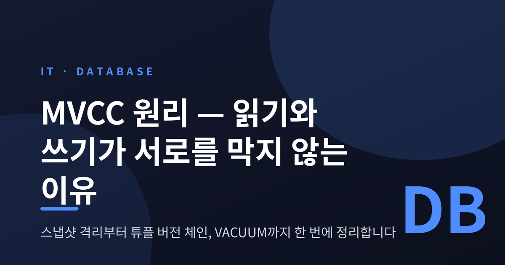
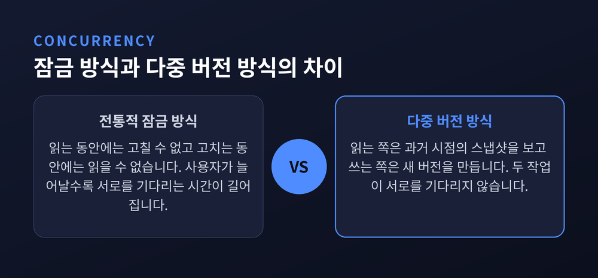
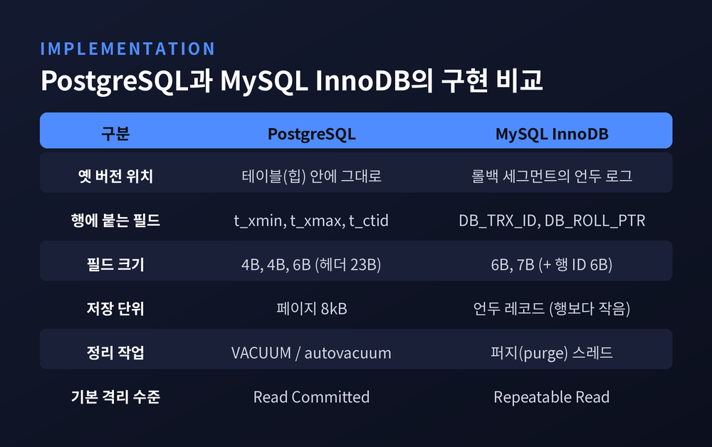
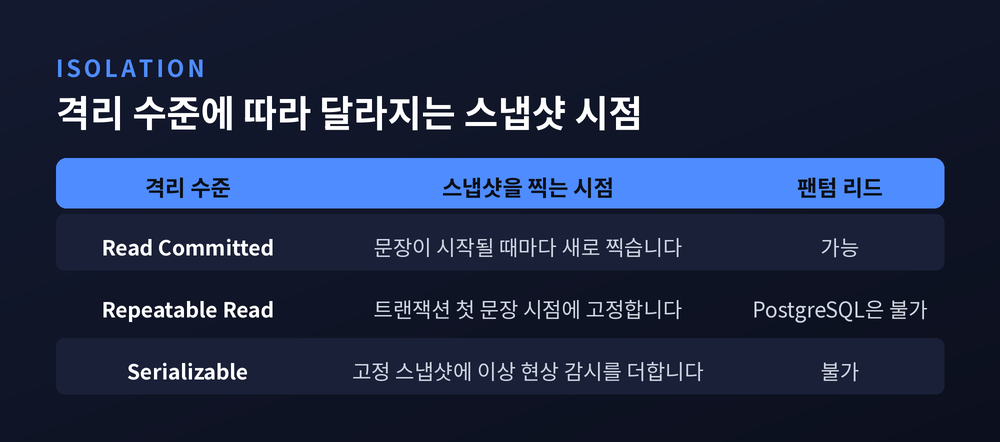
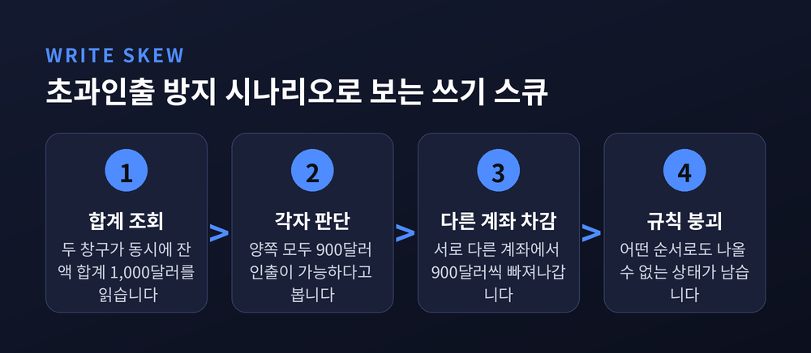
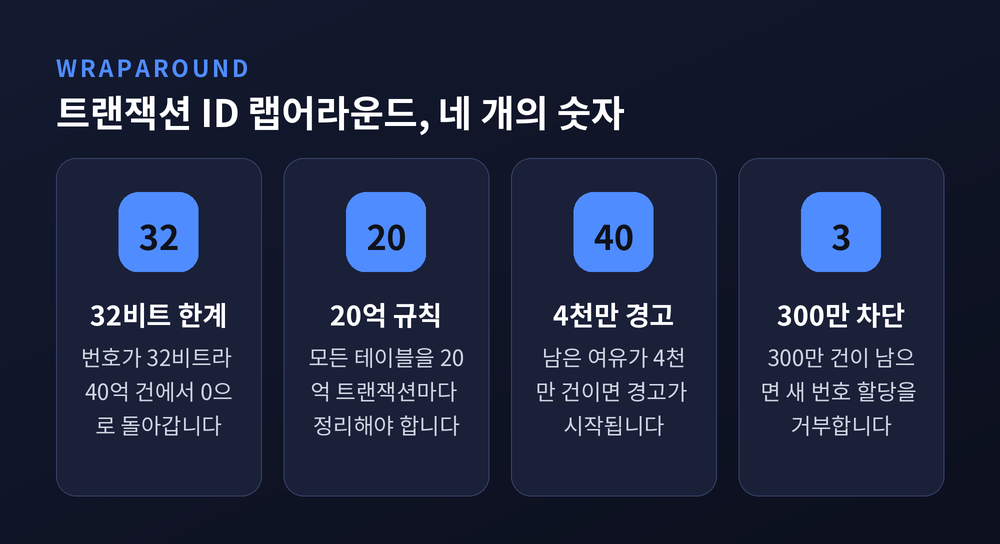

이번 글에서는 데이터베이스의 다중 버전 동시성 제어를 정리해 보겠습니다.
먼저 결론부터 세 줄로 요약합니다. 첫째, 데이터베이스는 값을 덮어쓰지 않고 버전을 쌓습니다. 둘째, 그래서 읽는 쪽은 과거의 한 장면을 보고, 쓰는 쪽은 새 장면을 만들며, 둘은 서로를 기다리지 않습니다. 셋째, 대신 쌓인 옛 버전을 치우는 청소 비용이 청구서로 돌아옵니다.
예전 방식은 단순했습니다. 누군가 한 행을 읽는 동안에는 아무도 그 행을 고치지 못했습니다. 반대로 누군가 고치는 동안에는 아무도 읽지 못했습니다. 안전하기는 합니다. 다만 사용자가 늘어날수록 서로를 기다리는 시간이 길어집니다.
지금의 방식은 다릅니다. PostgreSQL 공식 문서 13.1장은 이 모델의 장점을 한 문장으로 정리합니다.
"읽기는 결코 쓰기를 막지 않고, 쓰기는 결코 읽기를 막지 않는다."
같은 성질을 MySQL 매뉴얼도 다른 각도에서 확인해 줍니다. InnoDB의 일관된 읽기는 접근하는 테이블에 어떤 잠금도 걸지 않습니다. 그래서 다른 세션은 그 테이블을 자유롭게 수정할 수 있습니다. 두 엔진이 각자의 공식 문서에서 같은 원칙을 말하고 있는 셈입니다.
원리는 간단합니다. 각 SQL 문은 현재 상태가 아니라 얼마 전 시점의 스냅샷을 봅니다. 기저 데이터가 그사이 바뀌어도 상관없습니다. 이미 확보한 장면만 보면 되니까요.

그렇다면 데이터베이스는 "이 행을 지금 이 트랜잭션이 봐도 되는가"를 어떻게 판단할까요.
PostgreSQL은 행마다 도장을 두 개 찍습니다. 공식 문서 66.6장이 밝히는 튜플 헤더 구조를 보면 답이 나옵니다. 모든 테이블 행은 대부분의 머신에서 23바이트의 고정 헤더를 갖습니다. 그 안에 t_xmin과 t_xmax가 각각 4바이트씩 자리를 차지합니다. 전자는 이 행 버전을 삽입한 트랜잭션 번호이고, 후자는 이 행 버전을 지운 트랜잭션 번호입니다.
여기에 t_ctid라는 6바이트 필드가 하나 더 있습니다. 문서의 설명은 "이 행 또는 더 새로운 행 버전의 현재 위치"입니다. UPDATE가 일어나면 옛 버전은 그대로 두고 새 버전을 따로 만든 뒤, 옛 버전의 이 필드가 새 버전을 가리키게 합니다. 그렇게 튜플 버전 체인이 만들어집니다.
판정 규칙의 골격도 문서에 있습니다. 삽입 번호가 내 트랜잭션 번호보다 큰 행 버전은 "미래"에 속하므로 나에게 보이면 안 됩니다. 참고로 이 번호들은 8kB 단위 페이지 안에 저장되며, 페이지 헤더는 24바이트를 씁니다.
MySQL의 InnoDB는 같은 목표를 다른 방법으로 이룹니다. 매뉴얼 17.3장에 따르면 InnoDB는 모든 행에 숨은 필드 세 개를 덧붙입니다. 마지막으로 이 행을 건드린 트랜잭션을 가리키는 DB_TRX_ID가 6바이트, 언두 로그 레코드를 가리키는 롤 포인터 DB_ROLL_PTR이 7바이트, 자동 생성 행 번호 DB_ROW_ID가 6바이트입니다.
핵심은 두 번째 필드입니다. 옛 버전이 테이블에 남는 것이 아니라, 롤백 세그먼트 안의 언두 로그로 빠집니다. 과거를 읽어야 할 때는 롤 포인터를 따라 거슬러 올라가 그 시점의 행을 재구성합니다.
같은 문제를 푸는 두 갈래 설계입니다. 한쪽은 옛 버전을 제자리에 쌓고, 다른 한쪽은 옆으로 옮겨 둡니다. 어느 쪽이 절대적으로 낫다고 말하기는 어렵습니다. 다만 청소해야 할 대상이 어디에 쌓이는지가 달라지고, 그 차이가 운영 부담의 성격을 바꿉니다.
한 가지 덧붙이면, InnoDB에서 DELETE는 진짜 삭제가 아닙니다. 매뉴얼은 "삭제는 내부적으로 삭제 표시 비트를 세우는 갱신으로 처리된다"고 명시합니다.

같은 원리를 쓰더라도 스냅샷을 찍는 시점은 격리 수준에 따라 달라집니다. 이 지점을 놓치면 결과가 어긋납니다.
Read Committed에서는 문장이 시작되는 순간마다 새 스냅샷을 찍습니다. 그래서 한 트랜잭션 안의 연속된 두 SELECT가 서로 다른 값을 볼 수 있습니다. Repeatable Read에서는 트랜잭션의 첫 문장이 시작된 시점에 스냅샷을 고정합니다. 그래서 몇 번을 다시 읽어도 같은 값이 나옵니다.
기본값이 서로 다르다는 점은 기억해 둘 만합니다. PostgreSQL의 기본은 Read Committed이고, InnoDB의 기본은 Repeatable Read입니다. 같은 SQL이 두 엔진에서 다르게 동작할 수 있다는 뜻입니다.
팬텀 리드에 관해서도 짚어둘 대목이 있습니다. SQL 표준은 Repeatable Read에서 팬텀 리드를 허용하지만, PostgreSQL의 구현은 이를 허용하지 않습니다. 표준이 정한 것은 "최소한 막아야 할 것"이므로, 더 강한 보장은 규격 위반이 아닙니다.

여기서 한계를 인정해야 합니다. 스냅샷 격리는 만능이 아닙니다.
PostgreSQL 위키가 드는 예가 선명합니다. 어떤 은행이 예금자에게 전 계좌 합계 한도 내 인출을 허용한다고 합시다. 한 사람이 저축예금 500달러, 입출금예금 500달러를 갖고 있습니다. 이때 두 창구에서 동시에 900달러씩 인출을 시도합니다.
두 트랜잭션 모두 합계 1,000달러를 읽고 "900달러 인출 가능"이라 판단합니다. 그리고 서로 다른 계좌에서 차감합니다. 각자는 규칙을 지켰습니다. 그런데 합쳐 놓으면 1,800달러가 빠져나갑니다. 어느 쪽이 먼저 실행되었어도 나올 수 없는 상태입니다. 이것이 쓰기 스큐입니다.
PostgreSQL은 Serializable 수준에서 이를 막습니다. 방식은 술어 잠금입니다. 문서는 "이 잠금들은 어떤 블로킹도 일으키지 않으며, 따라서 교착 상태의 원인이 될 수 없다"고 못 박습니다. 대신 위험한 구조가 탐지되면 먼저 커밋한 쪽이 이기고 다른 쪽이 취소됩니다.
ERROR: could not serialize access due to read/write dependencies among transactions이 오류의 SQLSTATE는 항상 40001입니다. 그러니 이 수준을 쓰려면 애플리케이션에 재시도 로직을 갖춰야 합니다. 문서 역시 직렬화 실패를 처리하는 일반화된 방법이 필요하다고 강조합니다.

버전을 쌓는 방식에는 대가가 따릅니다. 쌓인 것은 언젠가 치워야 합니다.
PostgreSQL 문서 24.1장의 설명이 정확합니다. UPDATE나 DELETE는 옛 버전을 즉시 제거하지 않습니다. 다른 트랜잭션에 여전히 보일 가능성이 있는 한 지울 수 없기 때문입니다. 그대로 두면 디스크 사용량이 무한정 늘어납니다. 그 일을 하는 것이 VACUUM입니다.
주의할 점이 있습니다. 표준 VACUUM은 운영 중인 작업과 병렬로 돌지만, 회수한 공간을 운영체제에 돌려주지는 않습니다. 재사용 가능하다고 표시할 뿐입니다. VACUUM FULL은 공간을 실제로 반납하지만 테이블에 배타 잠금을 걸어 다른 작업을 전부 세웁니다. 문서의 권고는 분명합니다. 표준 VACUUM을 자주 돌려 VACUUM FULL이 필요해지는 상황 자체를 피하라는 것입니다. autovacuum 데몬은 아예 VACUUM FULL을 발행하지 않습니다.
MySQL 쪽에도 같은 청구서가 있습니다. InnoDB는 이 정리 작업을 퍼지라 부릅니다. 매뉴얼은 비슷한 속도로 소규모 삽입과 삭제를 반복하면 퍼지 스레드가 뒤처지고, 죽은 행 때문에 테이블이 계속 커지며, 결국 전부 디스크 바운드가 되어 매우 느려진다고 경고합니다. 표현은 달라도 진단은 같습니다.
가장 극적인 수치는 여기 있습니다. PostgreSQL의 트랜잭션 번호는 32비트입니다.
그래서 40억 건이 넘게 돌아간 클러스터는 번호가 0으로 되돌아가는 순간을 맞습니다. 과거였던 트랜잭션이 갑자기 미래로 보이고, 그 데이터가 보이지 않게 됩니다. 문서의 표현을 빌리면 "데이터는 거기 있지만, 접근할 수 없다면 위로가 되지 않는" 상황입니다.
그래서 규칙이 정해져 있습니다. 모든 데이터베이스의 모든 테이블을 최소 20억 트랜잭션마다 한 번씩 정리해야 합니다. 이때 VACUUM은 오래된 행을 동결 상태로 표시해, 랩어라운드와 무관하게 언제나 과거로 보이게 만듭니다.
안전장치는 두 단계입니다. 랩어라운드까지 4천만 건이 남으면 경고가 시작됩니다. 그래도 방치하면 300만 건이 남는 시점에 시스템이 새 번호 할당을 거부합니다. 이때부터 새로 시작할 수 있는 것은 읽기 전용 트랜잭션뿐입니다. 300만 건의 여유는 관리자가 불필요한 테이블을 정리할 시간을 남겨두기 위한 것입니다.

마지막으로 덜 알려진 부작용 하나를 덧붙입니다.
PostgreSQL의 인덱스는 가시성 정보를 담고 있지 않습니다. 그래서 일반 인덱스 스캔은 일치하는 항목마다 실제 테이블을 다시 읽어 "이 행이 나에게 보이는가"를 확인해야 합니다. 이 왕복을 줄이려고 VACUUM이 가시성 맵을 관리하고, 그 맵이 확보되어야 인덱스 온리 스캔이 가능해집니다.
InnoDB에도 비슷한 대가가 있습니다. 세컨더리 인덱스 레코드가 삭제 표시되었거나 더 새로운 트랜잭션이 해당 페이지를 건드렸으면, 커버링 인덱스 기법을 쓰지 못하고 클러스터형 인덱스를 다시 조회합니다.
한편 PostgreSQL에는 이 부담을 줄이는 장치도 있습니다. 갱신이 인덱스가 참조하는 컬럼을 건드리지 않고 같은 페이지에 자리가 남아 있으면, 인덱스를 갱신하지 않고 새 버전을 만들 수 있습니다. fillfactor를 낮추면 이 조건이 맞을 확률이 올라갑니다.
정리하면 이렇습니다.
다중 버전 동시성 제어는 동시성을 공짜로 주지 않습니다. 읽기와 쓰기가 서로를 기다리지 않는 대신, 쌓인 옛 버전을 치우는 일과 32비트 번호를 관리하는 일이 운영자의 몫으로 남습니다. 데이터베이스가 조용히 잘 돌아가는 동안에도 뒤에서는 계속 청소가 진행되고 있는 셈입니다.
그러니 기억할 것은 하나입니다 — 덮어쓰지 않는 대가는 치워야 할 것이 남는다는 점입니다.
느려진 데이터베이스 앞에서 무엇부터 보겠냐고 물으신다면, 저는 쌓인 옛 버전부터 살펴보겠다고 답하겠습니다.